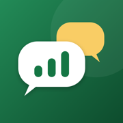

Small Talk StudioKullanım Koşulları
Son güncelleme: 16 Kasım 2026
Small Talk Studio'yu kullanarak bu koşulları ve Apple'ın standart son kullanıcı lisans sözleşmesini (Apple Standard EULA) kabul etmiş olursun. İkisi çelişirse Apple'ın sözleşmesi geçerlidir.
Uygulama ne yapar, ne yapmaz
Small Talk Studio günlük konuşma pratiği için bir eğitim uygulamasıdır. Tıbbi, psikolojik ya da terapötik bir hizmet değildir ve bir uzmanın yerine geçmez. Sosyal kaygı ya da başka bir sorun günlük hayatını zorluyorsa bir sağlık profesyoneline danışmanı öneririz.
Abonelikler
- 1. hafta ve bazı araçlar ücretsizdir. Programın tamamı, tüm paketler ve sınırsız pratik aylık ya da yıllık abonelikle açılır.
- Yıllık planda 7 günlük ücretsiz deneme olabilir. Deneme bitmeden en az 24 saat önce iptal edilmezse abonelik ücretlendirilir.
- Ücret, onaylamanla Apple hesabından alınır. Abonelik, dönem bitmeden en az 24 saat önce iptal edilmezse aynı fiyatla otomatik yenilenir.
- Aboneliğini App Store hesap ayarlarından yönetebilir ya da iptal edebilirsin. İptal, içinde bulunulan dönemin sonunda geçerli olur.
- İade talepleri Apple tarafından değerlendirilir: reportaproblem.apple.com.
İçerik
Uygulamadaki metinler, senaryolar, dersler ve görseller Small Talk Studio'ya aittir ve yalnızca kişisel kullanımın içindir; kopyalanamaz ya da başka bir yerde yayımlanamaz. Senin oluşturduğun kayıtlar ve yazılar sana aittir ve cihazında kalır.
Bilgiler ve kaynaklar
"Günün bilgisi" kartlarındaki bilgiler belirtilen kaynaklardan derlenmiştir. Doğru olmaları için özen gösteririz, ama eksiksiz olduklarını garanti etmeyiz.
Sorumluluk
Uygulama "olduğu gibi" sunulur. Yasaların izin verdiği ölçüde, uygulamanın kullanımından doğan dolaylı zararlardan sorumlu değiliz. Kayıtların yalnızca cihazında durduğu için yedeklenmeleri cihazının yedeklemesine bağlıdır.
Değişiklikler
Bu koşullar değişirse bu sayfa güncellenir ve üstteki tarih değişir. Değişiklikten sonra uygulamayı kullanmaya devam etmek, yeni koşulları kabul etmek anlamına gelir.
İletişim
Terms of Use English
Last updated: November 16, 2026
By using Small Talk Studio you agree to these terms and to Apple's Standard End User License Agreement. Where the two conflict, Apple's agreement applies.
What the app is and isn't
Small Talk Studio is an educational app for everyday conversation practice. It is not a medical, psychological or therapeutic service and does not replace a professional. If social anxiety or anything else makes daily life hard, please talk to a health professional.
Subscriptions
- Week 1 and some tools are free. The full program, all packs and unlimited practice unlock with a monthly or yearly subscription.
- The yearly plan may include a 7-day free trial. Unless cancelled at least 24 hours before the trial ends, the subscription is charged.
- Payment is charged to your Apple account at confirmation. The subscription renews automatically at the same price unless cancelled at least 24 hours before the end of the current period.
- Manage or cancel in your App Store account settings; cancellation takes effect at the end of the current period.
- Refunds are handled by Apple: reportaproblem.apple.com.
Content
The app's texts, scenarios, lessons and images belong to Small Talk Studio and are for your personal use; they may not be copied or republished. Your own recordings and writing are yours and stay on your device.
Facts and sources
"Fact of the day" cards are compiled from the sources shown. We take care to keep them accurate but cannot guarantee they are complete.
Liability
The app is provided "as is". To the extent the law allows, we are not liable for indirect damages arising from its use. Because recordings stay only on your device, backing them up depends on your device's backups.
Changes
If these terms change, this page is updated and the date above changes. Continuing to use the app after a change means you accept the new terms.